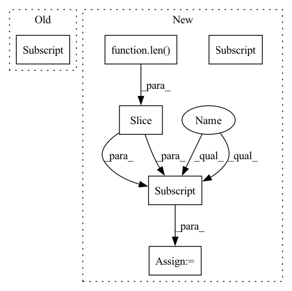

Pattern ID :3691
Before Change
if self.gate_type == "features":
self.scale = nn.Parameter(torch.ones((input_shape[-1],)), requires_grad=True).view(1, 1, input_shape[-1])
elif self.gate_type == "heads":
self.scale = nn.Parameter(torch.ones((input_shape[1],)), requires_grad=True).view(1, input_shape[1] , 1, 1)
self.scale = self.scale.repeat(1, 1, 1, input_shape[-1])
// Prepare streams infoAfter Change
// Built einsum input strings
self.einsum_in_1 = "abcdef"
self.einsum_in_1 = self.einsum_in_1[:len(self.input_shape)]
self.einsum_in_2 = self.einsum_in_1[self.dim_to_scale]
print(f"{self.einsum_in_1},{self.einsum_in_2}->{self.einsum_in_1}")
In pattern: SUPERPATTERN
Frequency: 3
Non-data size: 6
Instances Fragment ID: 13921884
Project Name: antofuller/configaformers
Commit Name: 587753fa0f50da143bb3a3ad4da1d65e3ee72c60
Time: 2021-11-11
Author: afuller187187@gmail.com
File Name: norm_module.py
M Class Name: Gate
N Class Name: Gate
M Method Name: __init__(3)
N Method Name: __init__(3)
M Parent Class: nn.Module
N Parent Class: nn.Module
M File Name: norm_module.py
N File Name: norm_module.py
M Start Line: 106
M End Line: 123
N Start Line: 106
N End Line: 129
Before Change
if self.gate_type == "features":
self.scale = nn.Parameter(torch.ones((input_shape[-1],)), requires_grad=True).view(1, 1, input_shape[-1])
elif self.gate_type == "heads":
self.scale = nn.Parameter(torch.ones((input_shape[1] ,)), requires_grad=True).view(1, input_shape[1], 1, 1)
self.scale = self.scale.repeat(1, 1, 1, input_shape[-1])
// Prepare streams infoAfter Change
self.scale = nn.Parameter(torch.ones(num_params), requires_grad=True)
// Built einsum input strings
self.einsum_in_1 = "abcdef"
self.einsum_in_1 = self.einsum_in_1[:len(self.input_shape)]
self.einsum_in_2 = self.einsum_in_1[self.dim_to_scale]
print(f"{self.einsum_in_1},{self.einsum_in_2}->{self.einsum_in_1}")
Fragment ID: 13921885
Project Name: antofuller/configaformers
Commit Name: 587753fa0f50da143bb3a3ad4da1d65e3ee72c60
Time: 2021-11-11
Author: afuller187187@gmail.com
File Name: norm_module.py
M Class Name: Gate
N Class Name: Gate
M Method Name: __init__(3)
N Method Name: __init__(3)
M Parent Class: nn.Module
N Parent Class: nn.Module
M File Name: norm_module.py
N File Name: norm_module.py
M Start Line: 106
M End Line: 123
N Start Line: 106
N End Line: 129
Before Change
N, C, T, H, W = inputs.size()
interval = 16
idx = torch.arange(0,T,interval)
rpn_inputs = inputs[:,:,idx]
rpn_inputs = rpn_inputs.transpose(1,2).contiguous().view(N*(T//interval),C,H,W)
with torch.no_grad():
proposals = rpn(rpn_inputs)
proposals = proposals.view(N,T//interval,10,4)After Change
rpn_inputs = torch.cat((rpn_inputs, rpn_inputs[:(max_N-len(inputs))*(T//interval)]))
with torch.no_grad():
proposals = rpn(rpn_inputs)
proposals = proposals.view(-1,T//interval,10,4)
if len(inputs) < max_N:
proposals = proposals[:len(inputs)]
outputs = model(inputs, proposals.detach())
// update to the largest batch_size
max_N = max(N, max_N)
else: Fragment ID: 13921887
Project Name: jd730/strg
Commit Name: 439d8eb70d35c5cc16fdabda09a67e2149af8c8a
Time: 2020-06-12
Author: jdhwang730@gmail.com
File Name: training.py
M Class Name: AnonimousClass
N Class Name: AnonimousClass
M Method Name: train_epoch(12)
N Method Name: train_epoch(12)
M Parent Class:
N Parent Class:
M File Name: training.py
N File Name: training.py
M Start Line: 57
M End Line: 62
N Start Line: 50
N End Line: 76
Before Change
module_path = module_path.split(".")
check_name = to_snake_case(type(check).__name__).lower()
path_parts = [it for it in module_path if it != "deepchecks"]
url = "/".join([*path_parts[:-1] , check_name])
version = deepchecks.__version__ or "stable"
link = link_template.format(version=version, path=url)
return f" <a href="{link}" target="_blank">Read More...</a>"After Change
// - docs.deepchecks.com/{version}/examples/tabular/checks/integrity/category_mismatch_train_test.html // noqa: E501 // pylint: disable=line-too-long
// Remove deepchecks from the start
module_path = module_path[len("deepchecks."):]
// There is a bug in doc rendering where the "tabular" is omitted, so do it for now
if module_path.startswith("tabular."):
module_path = module_path[len("tabular."):]
url = "/".join([*module_path.split(".")])
version = deepchecks.__version__ or "stable"
link = link_template.format(version=version, path=url) Fragment ID: 13921880
Project Name: deepchecks/deepchecks
Commit Name: 1e6f8b471b1c10ecd9aab0a18b0ee9a9d9e67484
Time: 2022-03-28
Author: matan@deepchecks.com
File Name: deepchecks/utils/strings.py
M Class Name: AnonimousClass
N Class Name: AnonimousClass
M Method Name: _generate_check_docs_link_html(1)
N Method Name: _generate_check_docs_link_html(1)
M Parent Class:
N Parent Class:
M File Name: deepchecks/utils/strings.py
N File Name: deepchecks/utils/strings.py
M Start Line: 128
M End Line: 131
N Start Line: 100
N End Line: 134